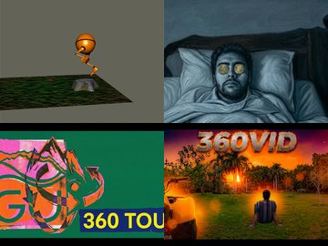
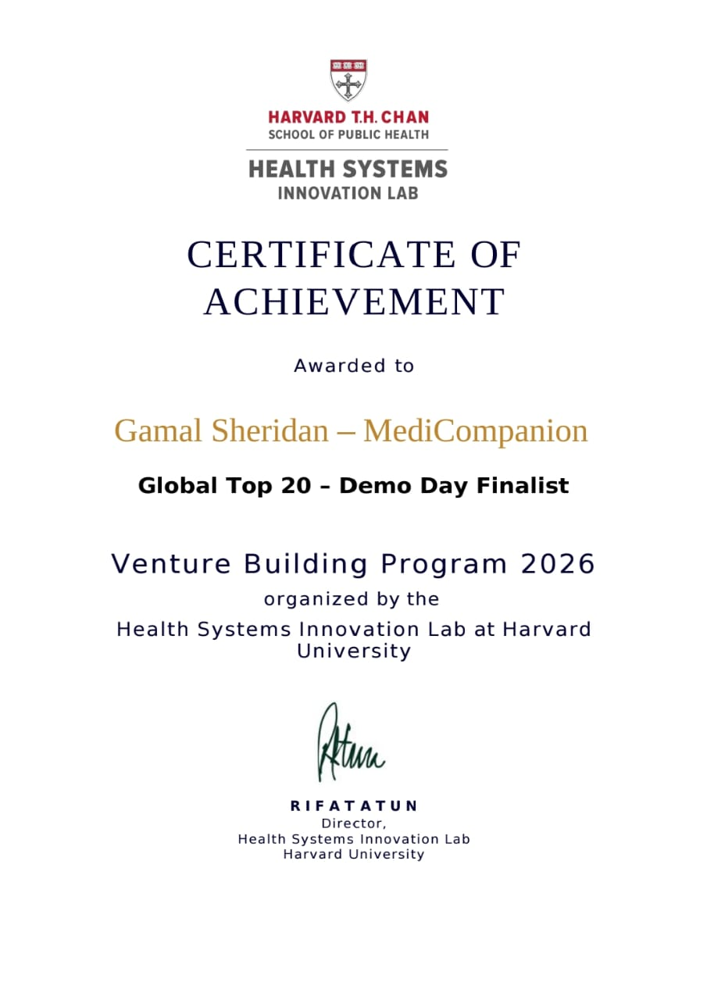
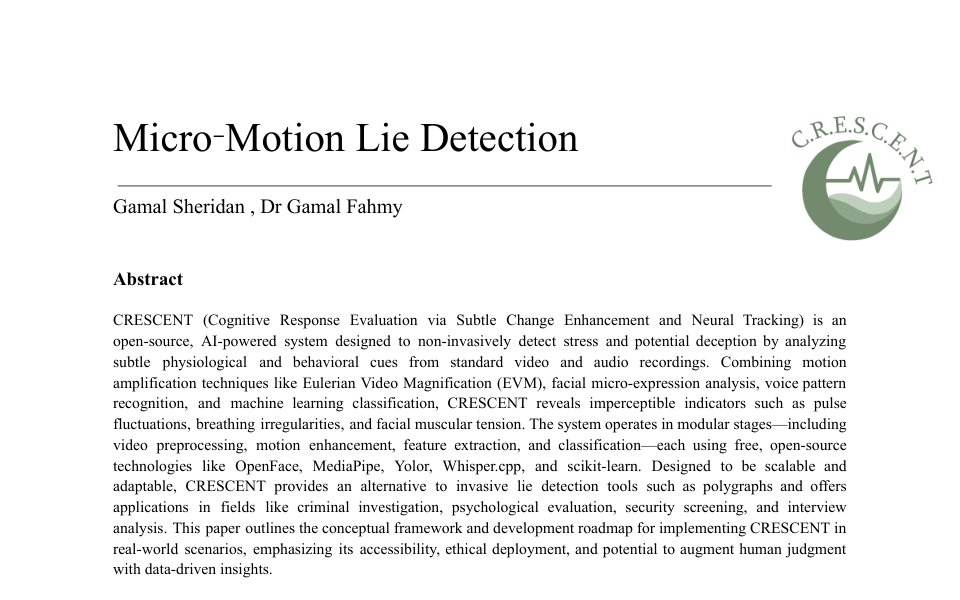
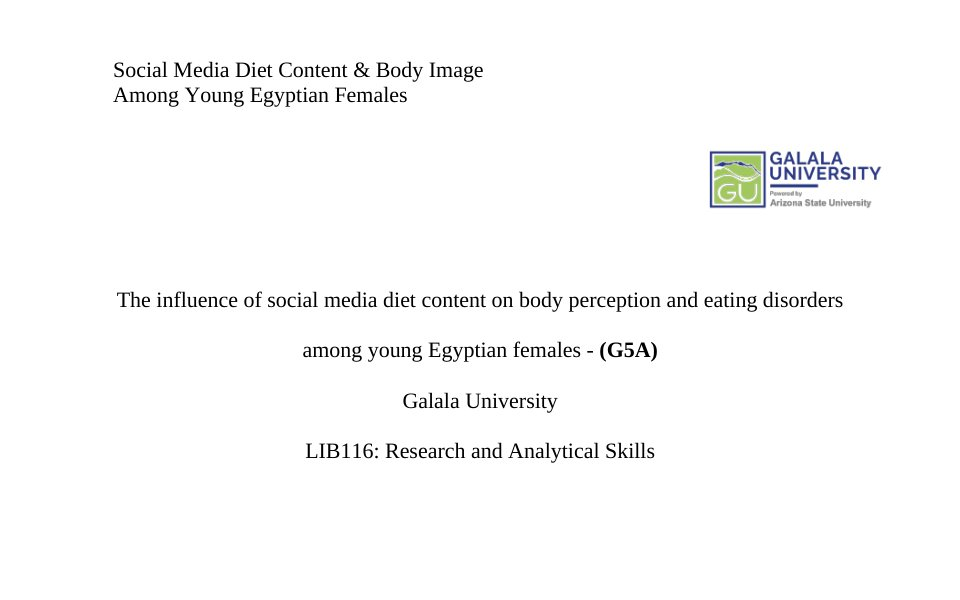
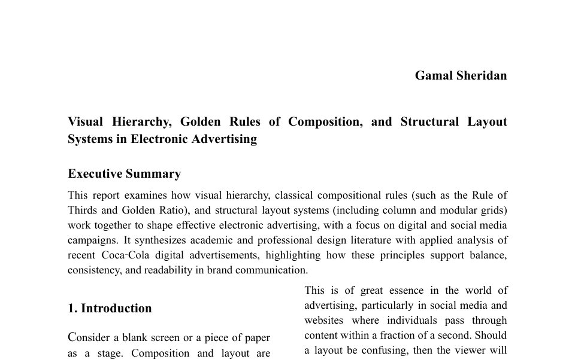
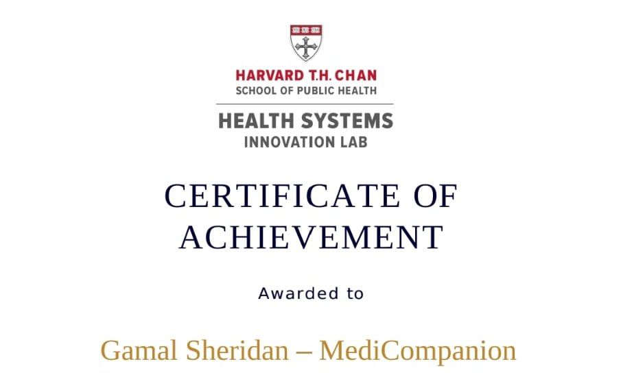
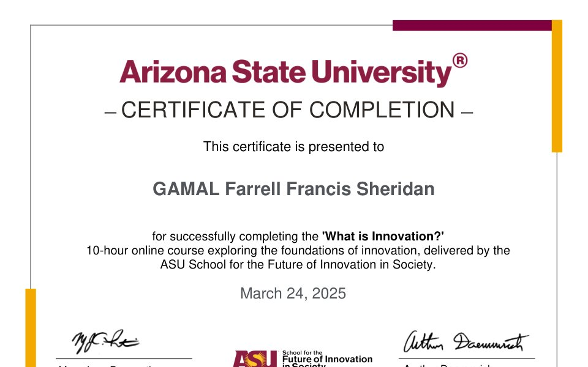

Available for freelance and full-time roles. Cairo based, remote ready, right to work in the EU, UK and Egypt.
Gamal Sheridan is a multimedia specialist and creative technologist working across 3D animation, video production, motion design and AI-driven media.
- Global Top 20 at Harvard's Health Systems Innovation Lab, Venture Building Program 2026
- First place in Egypt at the HSIL venture hackathon, as Creative and Design Lead
- Thirteen projects and three research papers, all delivered on a dual-degree timetable
A multimedia specialist who models the world, cuts the footage, designs the system around it and writes the code when a project needs more than a plugin.
Selected work
Full archive on Behancebehance.net/gamalsheridan
What I do
- Autodesk Maya
- Unreal Engine
- Blender
- Game asset creation
- Turntable and lighting
The GS mark, from first sketch to final
- BSc Graphic Information Technology, a dual degree between Arizona State University and Galala University, expected 2027
- Five showreel pieces, each planned, shot and cut in under a week during final exams. All full marks.
- Harvard HSIL global Top 20 and first place in Egypt, earned while enrolled full-time on both programmes
This is my baseline.
I'm completing a dual degree in Graphic Information Technology, run jointly by Arizona State University and Galala University. Two institutions, two sets of deadlines, one calendar. Every piece on this page was planned, produced and delivered inside that schedule, usually with less than a week to spare and no room for a second draft.
That is the point of showing it. This is not a highlight reel built over a quiet summer. It is what I produce at baseline, with the pressure on and the clock running. Carrying that load has made me quick at scoping, disciplined about priorities, and comfortable presenting work I had to defend the same week I made it.
Give the same hands a proper brief, a real timeline and my full, undivided focus, and the ceiling moves a long way up. I'm taking on freelance and creative-technology work now. The schedule that produced this portfolio is exactly why I can be trusted with yours.
Before university: several years editing video for universities and clubs, and three years as lead media consultant at a private company. Outside the studio: rowing, fishing and a long-standing interest in theatre. English native, Arabic fluent.
Built at baseline
Edited under the clock
Five pieces from the channel. Each one was planned, shot and cut in under a week during final exams, with no studio schedule behind it, and each one landed full marks. Treat them as the floor, not the ceiling.

@gamalsheridan on YouTubeyoutube.com/@gamalsheridanRecognition and record
Featured achievement
Global Top 20 and Demo Day finalist, Harvard Health Systems Innovation Lab
Selected among the global top 20 teams for MediCompanion, serving as Creative and Design Lead across graphic design and UI/UX, and advancing to the Demo Day finals of the Venture Building Program run by Harvard T.H. Chan School of Public Health, after the team took first place in Egypt at the associated hackathon.
- Top 20Global ranking
- FirstEgypt hackathon
- 2026Venture cohort

Open certificate-
2026MediCompanion, health-tech venture
Creative Lead and Head of Media
Harvard Health Systems Innovation Lab, global Top 20
- Led creative direction, brand identity and UI/UX design for the venture
- Headed media production: pitch visuals, promotional content and Demo Day materials
- Helped drive the team to the global Top 20 and Demo Day finals after first place in Egypt
-
2024 to presentSelf-employed, Giza, Egypt
Freelance multimedia projects
Video production, editing and compositing
- Managed full solo workflows from concept to export for fan-film trailers and edits in Premiere Pro
- Provided compositing and presentation support for academic team video assignments
- Produced several advertisements for a previous employer
-
2026ASU Galala GIT project
Product advertisement shoots
Photography, graphic design and 360° VR
- Directed professional workflows from full-scale photography to finished advertisements and illustrations
- Produced virtual 360° VR tours of real estate and the university campus
-
2025University team project
ASL Translator prototype
Real-time computer vision in Flask, OpenCV and MediaPipe
- Built a real-time sign language recognition prototype that classifies hand gestures from live video
- Integrated 360° camera work on the DJI Osmo and handled post-production in Premiere Pro
Written work
Three papers, each opens as a PDF
-

Co-authored with Dr Gamal Fahmy Micro-Motion Lie Detection (CRESCENT) An open-source AI framework combining Eulerian Video Magnification, facial micro-expression analysis and voice-pattern recognition to flag stress and potential deception from ordinary video and audio, without touching the subject. Open paper -

Quantitative study, Galala University Social media diet content, body perception and eating disorders among young Egyptian women A 200-respondent survey study on how diet and fitness content on TikTok and Instagram shapes body image, eating habits and mental health in women aged 18 to 25. Open paper -

Design theory report Visual hierarchy, composition and layout systems in electronic advertising How hierarchy, the Rule of Thirds, the Golden Ratio and grid systems drive effective digital advertising, applied to real Coca-Cola and Nike campaigns. Open paper
Education and certification
- In progress, expected 2027 BSc Graphic Information Technology Arizona State University and Galala University, dual degree. 3D animation in Maya and Unreal, video production in Premiere Pro, graphic design in Illustrator and Photoshop, computer science fundamentals in Python and OpenCV.
-

2026 Venture Building Program Health Systems Innovation Lab, Harvard T.H. Chan School of Public Health. Global Top 20, Demo Day finalist, as Creative and Design Lead for MediCompanion. View certificate -

March 2025 What is Innovation? Ten-hour course ASU School for the Future of Innovation in Society. A structured introduction to innovation frameworks and their application to venture and product work. Open PDF - August 2024 Supply Chain course American Chamber of Commerce in Egypt, Career Development Center. Professional short course covering supply chain fundamentals and operations.
What I do best
The tools and skills I rely on most, each used on a delivered project on this page.
- 3D and real-time
- Autodesk Maya
- Unreal Engine
- Blender
- Rigging and animation
- Lighting and rendering
- Video production
- Adobe Premiere Pro
- Storyboarding
- Compositing
- Colour
- Sound and pacing
- Design and illustration
- Adobe Photoshop
- Adobe Illustrator
- Adobe InDesign
- Logo and identity
- Poster and key art
- Paper cut illustration
- UI and UX design
- Figma
- User research
- Wireframes and prototypes
- Design systems
- Accessibility
- Arabic and right-to-left layouts
- Capture
- Photography
- 360° capture on DJI Osmo
- Virtual tours and VR
- Code and AI
- Python
- OpenCV
- MediaPipe
- Flask
- HTML, CSS and JavaScript
- Languages
- English, native
- Arabic, fluent